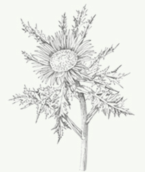

Шведская горечь
Не имеет аналогов в мире по оздоровительной силе и широте лечебных свойств
-
1978 г.
Европейцы используют шведскую горечь еще
с 1978 года -
104 года
104 года прожил
автор бальзама -
40 показаний
Больше 40 показаний
к применению -
24 языка
8 млн книг на 24 языках
продано о бальзаме
Что из этого списка
вы находите у себя?
-
01.
Сниженный тонус, не хвататет энергии
-
02.
Прыщи, бородавки и растяжки
-
03.
Слабая память и концентрация
-
04.
Болеете чаще раза в год?
-
05.
Головные боли
-
06.
Синяки, шишки, ожоги, порезы
долго не проходят -
07.
Плохо засыпаете и часто
просыпаетесь -
08.
Проблемы с желудком
-
09.
Стресс
Более 2 000 покупателей доказали эффективность "Шведской горечи" в каждом из этих случаев
Читать отзывПочему Шведская горечь завоевала такую популярность?
Вот лишь несколько причин:- Эффективность как при наружном, так и внутреннем применении, более 40 показаний к применению
- Случаи излечения с помощью сбора, когда традиционная медицина не смогла помочь
- Постоянно вывляются новые целительные свойства бальзама
- Эффект от применения можно увидеть сразу
Даже в странах с очень высоким уровнем медицины, таких как Германия и Австрия, бальзам Шведская Горечь продается в каждой аптеке!
Удивительная история возникновения бальзама
Далеко не у каждого лекарственного препарата есть такая удивительная история возникновения, уходящая к временам Парацельса, как у "Шведской горечи". Всю свою жизнь Парацельс искал эликсир долголетия!
Он эксперементировал с рецептами, в которых горькие коренья комбинировались с разными лекарственными травами. Позднее в 18 веке на основании оставшихся после Парацельса исследований шведский доктор Клауст Замст создал рецепт удивительного элексира, который он принимал всю свою жизнь. Кстати, умер доктор Замст на 104-м году жизни, упав с лошади при верховой езде
В конце прошлого века рецепт попал к известной австрийской травнице Марии Трэбэн, которая, изучив и дополнив его, популяризовала в странах Европы. Теперь сбор трав "Шведская горечь" помогает людям по всему миру.
«Кто принимает бальзам утром и вечером, тому не нужны другие лекарства, так как он укрепляет тело, оживляет нервы и освежает кровь, снимает дрожь в руках и ногах. Тело остается упругим, лицо молодым и красивым»Автор бальзама, Доктор Клаус Замст /1620-1774г./
Что вы получите вместе со сбором трав «Шведская горечь?»
- 01 Сбор трав
- 02 Инструкция по применению
- 03 Сертификат качества
Состав «Шведской горечи»
Все травы, входящие в сбор, собраны в альпийском заповеднике «Гуркталь» и имеют немецкий сертификат качества.
Строго выверенные пропорции каждого компонента в составе
— 01
Angelica archangelica
—02
Carlina acaulis
—03
Cunnamomum camphora
—04
Fraxinus ornus
—05
Cammiphora molmol
—06
Pheum palmatum
—07
Crocus sativus
—08
Cassia angustifolia
—09
Artemisia absinthium
—10
Curcuma zedoaria
—11
Часть рецепта до сих пор находится в секрете
?Theriak venezian
Все травы в составе бальзама обладают сильным очищающим воздействием, при этом каждый из компонентов усиливает действие остальных.
Соединяясь вместе они создают мощный очищающий эффект. Как оказалось, именно за счет этого эффекта бальзам способен исцелять многие болезни.